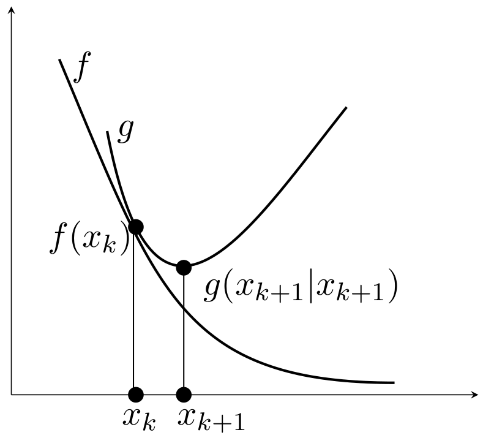
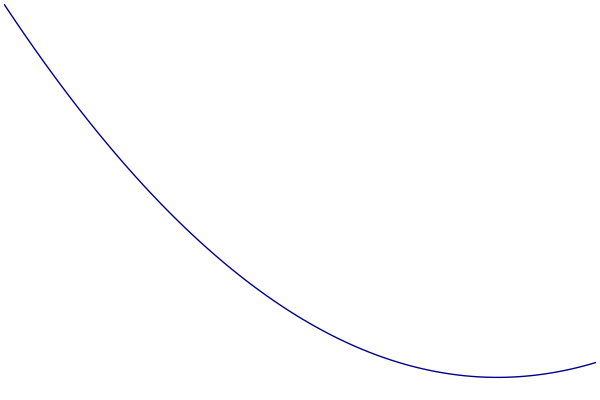
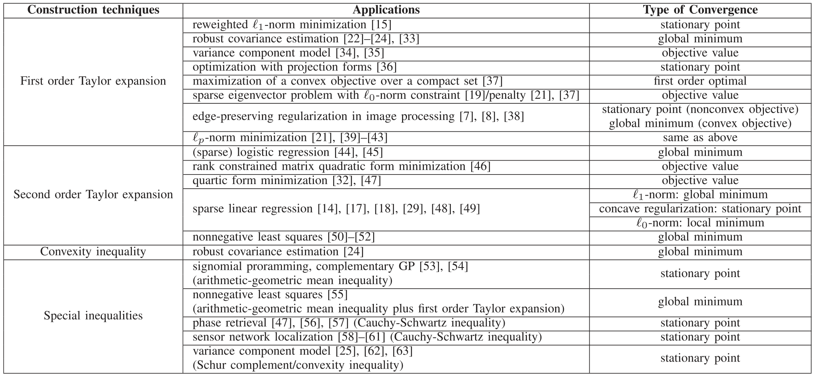

写在前面
以前看算法时，Majorization-Minimization算法经常出现，借助一些blog和slide,,,,来总结下。
MM算法是什么
MM算法是优化领域的一个重要方法。与其说它是一个具体算法，不如说是一个算法框架，因为很多具体的算法都可以被推断成MM算法，例如坐标下降法(coordinate descent)、近端梯度法(proximal gradient)、EM算法等等。
回到MM算法。复杂的优化问题不方便直接处理时，通常期望找到一个近似的问题或者近似的解来间接解决原问题。再看算法名字
Majorization+Minimization
当然，该算法也存在反面
Minorization+Maximization
显然意味着两个步骤交替进行
- 找到一个可以控制迭代点趋于最优解的优化函数
- 求解该近似函数为目标的最优化
从数学角度来说，MM算法的核心思想是连续上限最小化(Successive upper bound minimization)，设计一系列近似的优化(majorizing)函数来控制原函数的上限，通过最小化序列来收敛至原目标的最优解。
简单来说，MM算法将原始的优化问题转化为一系列简单的优化问题，让求解变得更简单。
优化函数定义
目标函数f(x)在点xk处的优化函数g(x∣xk)满足两点性质
占优条件(dominance condition)
g(x∣xk)≥f(x),∀x
切线条件(tangent condition)
g(xk∣xk)=f(xk),∀xk
即g(x∣xk)在f(x)上方且相切于点x=xk。

只要满足这两个条件，如下迭代产生的序列必能收敛至局部最优解。
xk+1=argxming(x∣xk)
这是因为
f(xk+1)≤g(xk+1∣xk)≤g(xk∣xk)=f(xk)
注意：
- MM算法得到的序列保证目标函数值非增
- 更新的序列点用于构造下一代的优化函数
- 优化函数通常用于分裂参数(split parameters)，从而可以逐元素进行更新。
MM过程可视化
- 蓝色：原始的目标函数
- 绿色：一系列优化函数
- 红色：切点的选择

优化函数的构造
选择合适的优化函数尤为重要，通常有四种方式：一阶泰勒展开、二阶泰勒展开、凸性不等式和特殊不等式。

一阶泰勒展开
一阶可微函数f在点x0处的泰勒展开为
f(x)=f(x0)+∇fT(x0)(x−x0)+O
若f为凹函数，一阶泰勒展开是f的全局向下估计(underestimator)，对应于Minorization Maximization，即
f(x)≥f(x0)+∇fT(x0)(x−x0)
若f为凸函数，一阶泰勒展开是f的全局向上估计(overestimator)，对应于Majorization Minimization，即
f(x)≤f(x0)+∇fT(x0)(x−x0)
二阶泰勒展开
若函数f是二阶可微的，在点xk处的泰勒展开为
f(x)=f(xk)+∇fT(xk)(x−xk)+21(x−xk)T∇2f(ξ)(x−xk)+O
对应的优化函数可设置为二次函数
g(x∣xk)=f(xk)+∇fT(xk)(x−xk)+21(x−xk)TM(x−xk)
其中M⪰∇2f(x),∀x，即M−∇2f(x)为半正定矩阵，则有
g(x∣xk)−f(x)=21(x−xk)T(M−∇2f(ξ))(x−xk)≥0
说明g控制了f。M的选择不唯一，通常选M=∇2f(x)+δI。
选择二阶泰勒展开作为优化函数g(x∣xk)后，迭代更新存在闭形式
xk+1=xk−M−1∇f(xk).
可以理解为二次函数求极小点，而更新公式类似于Newton法，但使用了保证目标函数下降的Hessian矩阵的近似。
应用
最小二乘
考虑一个最小二乘问题
f(x)=∥Ax−b∥22
其一阶导和二阶导计算如下：
∇f(x)∇2f(x)=2AT(Ax−b)=2ATA
因此f在点xk处的二阶泰勒展开式为
f(x)=f(xk)+2AT(Axk−b)(x−xk)+2(x−xk)TATA(x−xk)
构造优化函数
g(x∣xk)=f(xk)+2AT(Axk−b)(x−xk)+2(x−xk)TM(x−xk)
其中仅需要对角阵满足M⪰ATA，可以取M=ATA+δI，其中δ>0。
非负矩阵分解
给定向量x，非负矩阵分解模型如下
f(W,h)=∥Wh−x∥22
同样做二阶泰勒展开
f(W,h)=f(hk)+2WT(Whk−x)(h−hk)+2(h−hk)TWTW(h−hk)
取对角矩阵M=diag([h]i[WTWh]i)，则有M⪰WTW，对应的优化函数为
g(W,h∣hk)=f(hk)+2WT(Whk−x)(h−hk)+2(h−hk)TM(h−hk)
Logistic回归
利用样本xi以及二元响应变量yi∈{0,1}，训练回归模型如下：
f(β)=i∑{−yixiTβ+ln[1+exp(xiTβ)]}
其一阶导和二阶导计算如下：
∇f(β)∇2f(β)=i∑−[yi−yi^(β)]xi=i∑yi^(β)[1−yi^(β)]xixiT
设y^i(β)=(1+exp(−xiTβ))−1，下面构造优化函数：
- Hessian矩阵形式为∇2f(β)=XTWX，其中对角矩阵W的对角元素为y^i(1−y^i)
- y^i∈(0,1)，所以41≥y^i(1−y^i)
- 选择M=XTX/4则可构造二次上限(quadratic upper bound)
更新规则如下
MM算法
β(t+1)=β(t)−4(XTX)−1XT(y−y^(β(t)))
整个过程只需要计算一次矩阵的逆(XTX)−1
Newton算法
β(t+1)=β(t)−(XTWX)−1XT(y−y^(β(t)))
每次迭代需反复计算矩阵的逆(XTWX)−1
这个例子不难发现，目标函数f是光滑的凸函数，所以只需要找到函数二阶导的上界，就能利用二阶泰勒展开式，很容易构造出一系列优化函数，此外优化函数的最小化存在闭解，为原问题减少了大量的计算成本。
DC programming
假设函数f可表示两个可微的凸函数之差，即
f(x)=g(x)−h(x)
通常认为f是非凸的，因此传统的凸分析算法不再适用，但是该函数可分解为凸函数(g)与凹函数(−h)之和，因此不妨对后者进行一阶展开得到线性函数(既是凸函数又是凹函数)
u(x∣xk)=g(x)−(h(xk)+∇hT(xk)(x−xk))
不难看出
u(x∣xk)≥f(x),∀x
u(xk∣xk)=f(xk)
则线性化后的表示u(x∣xk)可作为优化函数来控制原函数f(x)。
ℓ2−ℓp优化问题
考虑如下常见的优化问题(p≥1)
f(x)=21∥Ax−y∥22+μ∥x∥p
关键在于构造优化函数，首先定义如下距离函数
dist(x∣xk)=2c∥x−xk∥22−21∥Ax−Axk∥22
其中参数c满足c>λmax(ATA)。显然有
dist(x∣xk)≥0,∀x
dist(xk∣xk)=0
将dist(x∣xk)加到原函数上则可作为优化函数来控制原函数f(x)。
g(x∣xk)=f(x)+dist(x∣xk)=2c∥x−xˉk∥22+μ∥x∥p+const
其中
xˉk=c1AT(y−Axk)+xk
另外，原函数f不存在显式的最优解，而优化函数g(x∣xk)存在显式的最优解(退化到矩阵A为单位阵这一特殊情形)。
期望最大化（EM）算法
给定一个随机观察变量w，用对数似然函数最小化来估计θ
θ^ML=argθmin−lnp(w∣θ)
E-step
g(θ,θr)=Ez∣w,θr{lnp(w,z∣θ)}
M-step
θr+1=argθming(θ,θr)
迭代产生一个{−lnp(w∣θr)}的非减序列。
对目标函数运用Jensen不等式可得到优化函数
==−lnp(w∣θ)−lnEz∣θp(w∣z,θ)−lnEz∣θ[p(z∣w,θr)p(z∣w,θr)p(w∣z,θ)]=−lnEz∣w,θr[p(z∣w,θr)p(z∣θ)p(w∣z,θ)](interchange integrations)≤−Ez∣w,θrln[p(z∣w,θr)p(z∣θ)p(w∣z,θ)](Jensen’s inequality)=−Ez∣w,θrlnp(w,z∣θ)+Ez∣w,θrlnp(z∣w,θr)≜u(θ,θr)
优势 or 原理
体现在
- 避免矩阵求逆
- 分离问题的参数（并行计算）
- 使优化问题线性化（DC programming）
- 优雅地处理平等和不平等的约束
- 恢复对称性
- 将一个非平滑问题变成一个平滑问题
- 优化函数优化的闭解
迭代计算则是需要付出的代价。
参考文献